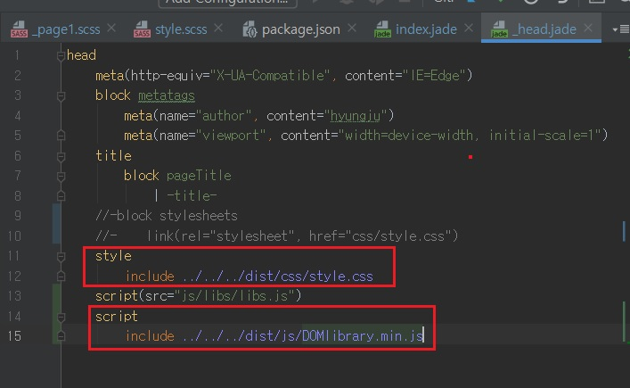
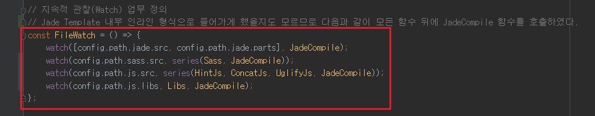

Jade와 같은 HTML Template에 css, js파일을 인라인 스타일로 넣을 때 주의할점!!!!!
- Jade와 같은 HTML Template에 css, js파일을 인라인 스타일로 넣을 때 주의할점!!!!!
-

위처럼 Jade와 같은 HTML Template에 스타일, 스크립트가 인라인 형식으로 들어가도록 되어 있을 때,
주의할 점이 있다.

이처럼 지속 관찰 업무 뒤에 JadeTemplate 함수를 넣어주는 거다.
인라인 스타일로 들어갔으니 당연히 HTML 도 다시 그려주고, 다시 로드해줘야겠지...?
이 생각을 8시간 동안 못해서 8시간동안 끙끙댔다는...ㅠㅠ
여튼 이렇게 처리 안하면 저런 인라인 스타일, 스크립트로 들어간 부분들은 실시간으로 반영된 모습을 확인할 수 없다.
우연히 알게된...하지만 이거 알아내려고 거의 8시간 끙끙댄거 생각하면...
정말 간단한 문제였는데 이거 때문에 시간이 이렇게 끌릴줄은 몰랐다.
여튼 이 부분 조심하자!!!